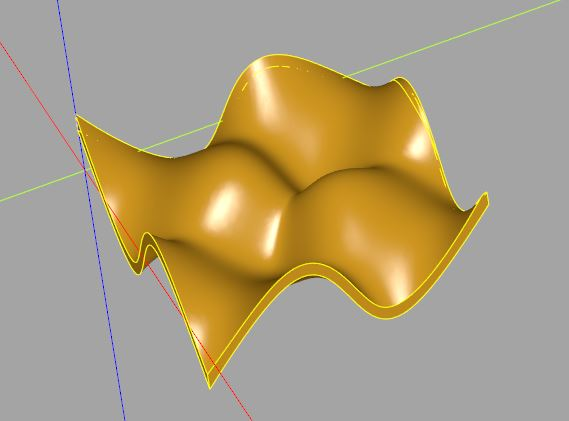

曲線與曲面
November 26, 2021Workplane 提供了相關方法，可以基於參數方程式等來描述曲線與曲面。
spline
spline 方法，spline 字面意義是樣條，基於一組控制點，透過內插的方式來建立曲線，不同的樣條曲線計算會有不同的效果，Workplane 的 spline 會建立通過控制點的曲線，例如，來個螺旋曲線：
from math import cos, sin, radians
import cadquery as cq
radius = 10
num_of_pts = 30
h_step = 1
fn = 6
a_step = 360 / fn
points = [
(
radius * cos(radians(i * a_step)), # x
radius * sin(radians(i * a_step)), # y
i * h_step # z
) for i in range(num_of_pts)
]
helix = cq.Workplane().spline(points)
show_object(helix)
# 標示控制點
box = cq.Workplane().box(1, 1, 1)
for p in points:
show_object(box.translate(p))
這會顯示以下的模型，可以看到控制點與控制點間也是曲線：
spline 可以接受的點可以是三維，不過，線沒有寬度、厚度的概念，因此 spline 被歸類在 2D 操作，事實上，先前談過的 polyline 也可以接受三維的點，只不過，像 spline、polyline 這類方法，主要是會在一個平面（例如 XY 平面）建立曲線，後續再進行進一步操作，像是 extrude。
import cadquery as cq
result = (cq.Workplane()
.spline([(0, 0), (10, 10), (0, 10)]).close()
.extrude(1)
)
這會建立以下的模型：
parametricCurve
如果想要以參數式的形式來畫曲線，可以使用 parametricCurve 方法，例如：
from math import sin, pi
import cadquery as cq
def sin_wave(t):
return (t * 2 * pi, sin(t * 2 * pi))
result = (cq.Workplane()
.moveTo(2 * pi, 0)
.lineTo(2 * pi, 5)
.lineTo(0, 5)
.lineTo(0, 0)
.parametricCurve(sin_wave)
.wire()
.extrude(1)
)
parametricCurve 指定的函式可以接受一個參數，傳入的值預設會是 0 到 1，分別可以透過 start 與 stop 來指定（傳入的值包含兩者），預設會切為 400 等分，可以透過 N 來指定，因此函式會接受到 N + 1 次的值，函式要傳回座標點，可以是 2D 或 3D，傳回的座標點會作為控制點，計算內插值構成曲線，曲線會通過控制點：
你可以試著在以下的範例指定 N 為 2、3 或更大的值，看看控制點與建立的曲線：
from math import sin, pi
import cadquery as cq
def sin_wave(t):
return (t * 2 * pi, sin(t * 2 * pi))
N = 3
result = (cq.Workplane()
.parametricCurve(sin_wave, N = N)
)
show_object(result)
box = cq.Workplane().box(.1, .1, .1)
step = 1 / N
for i in range(N + 1):
show_object(box.translate(sin_wave(i * step)))
當 N 為 3 時會顯示以下的結果：
（CadQuery API 文件沒有明確指出曲線是採用哪種內插計算，不過，應該是〈Catmull-Rom 樣條〉這類曲線。）
parametricSurface
Workplane 有個 parametricSurface，使用上類似 parametricCurve，不過被指定的函式接受兩個值，傳回的座標會用來建立曲面：
from math import cos, pi
import cadquery as cq
def wave(u, v):
return (u, v, 0.5 * cos(pi * u) * cos(pi * v))
w = cq.Workplane().parametricSurface(wave, N = 5, stop = 3)

曲面沒有厚度，因此還是被歸為 2D 的操作，這個曲面的應用是切割實體。例如：
from math import cos, pi
import cadquery as cq
def wave(u, v):
return (u, v, 0.5 * cos(pi * u) * cos(pi * v))
w = (cq.Workplane()
.center(1.5, 1.5)
.box(3, 3, 3)
.split(cq.Workplane().parametricSurface(wave, N = 5, stop = 3))
.solids('<Z')
)
split 可以指定一個形狀，它會用來切割目前既有的實體，在上例中，建立的曲面用來切割方塊，然後取 Z 軸負方向最下面的實體，這樣就得到一個有厚度，這種下面平整的厚度實體稱為 block：
如果想直接按照曲面來建立厚度呢？就目前而言，這需要一些技巧，可以先用 shell 造出一層殼：
from math import cos, pi
import cadquery as cq
def wave(u, v):
return (u, v, 0.5 * cos(pi * u) * cos(pi * v))
box = cq.Workplane().box(3, 3, 3)
w = (box.translate((1.5, 1.5))
.split(cq.Workplane().parametricSurface(wave, N = 5, stop = 3))
.solids('<Z')
.faces('>X or <X or <Y or <Z')
.shell(.1)
)
show_object(w)
在〈殼的建立〉中談過，可以將不需要建殼的面選取，然後再執行 shell，不過至少要留下兩個連續的面：
為了取得曲面部份，可以用個方塊來交集：
from math import cos, pi
import cadquery as cq
def wave(u, v):
return (u, v, 0.5 * cos(pi * u) * cos(pi * v))
box = cq.Workplane().box(3, 3, 3)
w = (box.translate((1.5, 1.5))
.split(cq.Workplane().parametricSurface(wave, N = 5, stop = 3))
.solids('<Z')
.faces('>X or <X or <Y or <Z')
.shell(.1)
) & box.translate((1.5, 1.5))
show_object(w)
這就得到了以下的結果：

interpPlate
Workplane 有個 interpPlate 方法，可以建立 N 邊曲面（N-Sided Surface），使用時指定邊的頂點以及面的控制點，也可以指定厚度，例如：
import cadquery as cq
thickness = .1
edge_points = [(0, 0), (10, 0), (10, 10), (0, 10)]
surface_points = [(2.5, 2.5, 2.5), (7.5, 7.5, -2.5)]
plate = cq.Workplane().interpPlate(edge_points, surface_points, thickness)
show_object(plate)
box = cq.Workplane().box(.5, .5, .5)
for p in surface_points:
show_object(box.translate(p))
點一次加入太多的話，不容易控制，使用時大概是逐點加入，看看可否控制出想要的曲面，上例會顯示以下的結果：